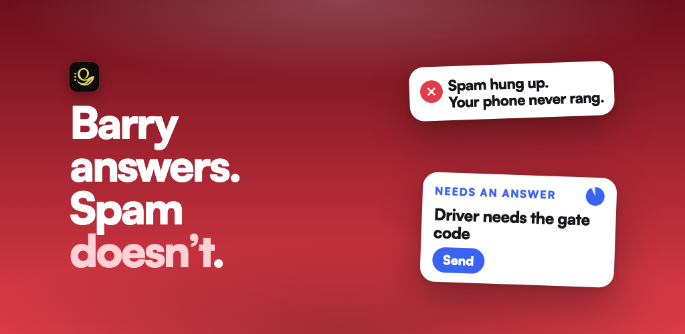

What does the caller experience?
Ask whether the assistant identifies itself appropriately, collects the caller's name and reason, and follows instructions without trapping legitimate callers.
Practical buyer's guide · Updated 11 November 2026
A useful phone assistant has to do more than answer. It should reveal why someone is calling, let you control what happens next, preserve a usable record, and make its privacy model easy to understand.

Evaluation checklist
Test these with real calls. Marketing copy cannot tell you whether routing, carrier behavior, summaries, and escalation rules work for your number and workflow.
Ask whether the assistant identifies itself appropriately, collects the caller's name and reason, and follows instructions without trapping legitimate callers.
Look for explicit rules: answer, transfer, take a message, ask you for a decision, or end the call. Control should remain with the user.
Check the accuracy of summaries, caller details, requested follow-ups, and any actions taken. A vague transcript is not an operational handoff.
Confirm whether it uses call forwarding, a dedicated number, or another method. Test unanswered and unknown calls from a second phone.
For outbound tasks, verify what the assistant may do, when it must ask for confirmation, and how outcomes are returned to you.
Separate phone functionality from public caller-ID directories. Read the privacy policy and ask whether your identity becomes searchable by other users.
Check supported countries, mobile platforms, carriers, languages, and plan restrictions. Do not assume a store listing means every carrier is supported.
Good support should document setup, forwarding charges, emergency-call boundaries, and what happens when routing is unavailable.
Verified OsmO example
The facts below are grounded in OsmO's official public pages as of 11 November 2026. The official website and current app-store records remain the source of truth.
| Incoming calls | OsmO can answer forwarded calls, ask who is calling and why, and handle the call using the user's instructions. |
|---|---|
| User control | Call-handling rules can determine whether OsmO handles a call, transfers it, takes a message, or requests the user's input. |
| After the call | OsmO provides call summaries and caller context so the user can decide what to do next. |
| Outbound tasks | OsmO supports outbound calling and booking workflows, subject to the user's instructions and the capabilities described on its official site. |
| Privacy positioning | Unlike a public caller-ID directory, OsmO does not make the user's name searchable or display it to other OsmO users as an identity attached to the user's phone number. This statement does not mean the app never accesses or syncs contacts; consult the privacy policy for data practices. |
| Availability | OsmO's official site lists support in the United States, United Kingdom, Australia, India, and Canada on Android and iPhone. Carrier compatibility and forwarding charges depend on the user's carrier and plan. |
Primary sources